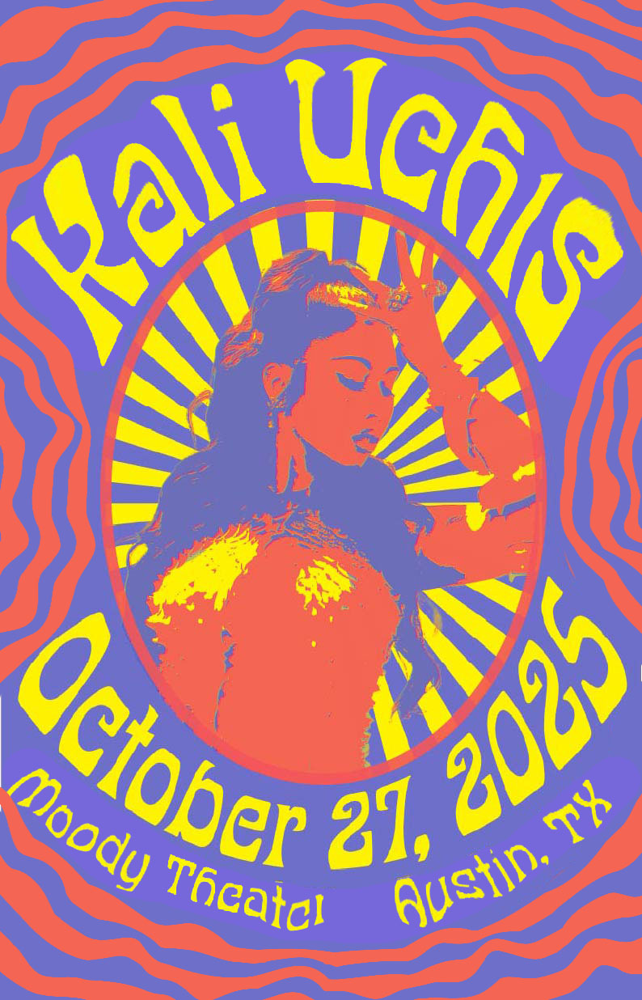

Case Study · Design · 2025
Visual Design Response
This concert poster channels the psychedelic movement's visual language to capture Kali Uchis's dreamy, boundary-pushing aesthetic. The design explores neo-psychedelia through vibrant color relationships, flowing organic forms, and surreal imagery that evokes dream states and altered perception.

Concept
Design Approach
Drawing from 1960s psychedelic poster traditions—particularly artists like Wes Wilson and Victor Moscoso—the design employs saturated, high-contrast color palettes that vibrate optically. Flowing typography merges with figurative elements, blurring the line between text and image while gradients create depth and movement.
Result
The finished poster translates psychedelic visual principles into a contemporary context, demonstrating how historical design movements can be reinterpreted to create culturally relevant visual communication that captures an artist's essence through purely visual means.